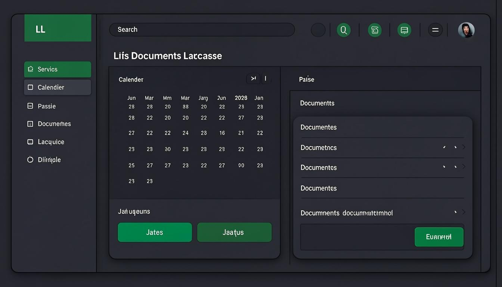

Chapitre 1
Introduction
Bienvenue dans le manuel d'utilisation de JurisLink pour le profil Assistant. En tant qu'assistant, vous assurez le soutien administratif et opérationnel du cabinet. Votre rôle est orienté vers la gestion documentaire, l'organisation des tâches, la planification des événements et la saisie des temps passés.
Résumé de vos capacités :
✓Dossiers & ClientsConsultation, modification et export. Pas de création.
✓DocumentsConsultation, création, modification et export. Accès étendu pour la gestion documentaire.
✓Tâches & ÉvénementsConsultation, création, modification et export. Gestion complète des tâches et de l'agenda.
✓Temps passésConsultation, création, modification et export.
Restrictions importantes
Vous n'avez pas accès à : la facturation, les rapports, les paiements, les utilisateurs, les paramètres, l'audit, la messagerie (sauf consultation) et les communications. Vous ne pouvez ni créer de dossiers ni créer de clients.
Chapitre 2
Premiers pas
Connexion à l'application
1Accéder à l'écran de connexionLancez JurisLink depuis votre navigateur. L'écran de connexion s'affiche avec les champs Identifiant et Mot de passe.
2Saisir vos identifiantsEntrez votre identifiant professionnel et votre mot de passe fournis par l'administrateur du cabinet.
3Valider la connexionCliquez sur « Se connecter ». Vous accédez au tableau de bord Assistant.
Présentation du tableau de bord
Le tableau de bord Assistant affiche vos tâches en cours, les prochains événements à l'agenda, les documents récemment modifiés et un résumé de vos temps passés. Il est conçu pour faciliter votre travail administratif quotidien.

Figure 1 — Tableau de bord de l'Assistant
Navigation dans le menu latéral
Le menu latéral affiche les sections accessibles : Dossiers, Clients, Documents, Tâches, Agenda et Temps passés. Les sections Factures, Rapports, Utilisateurs et Paramètres ne sont pas visibles.